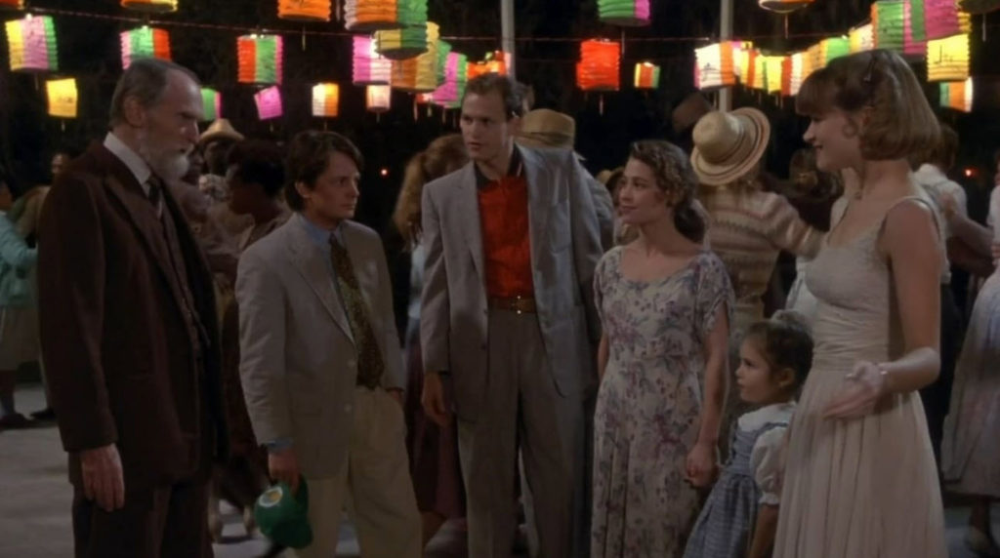
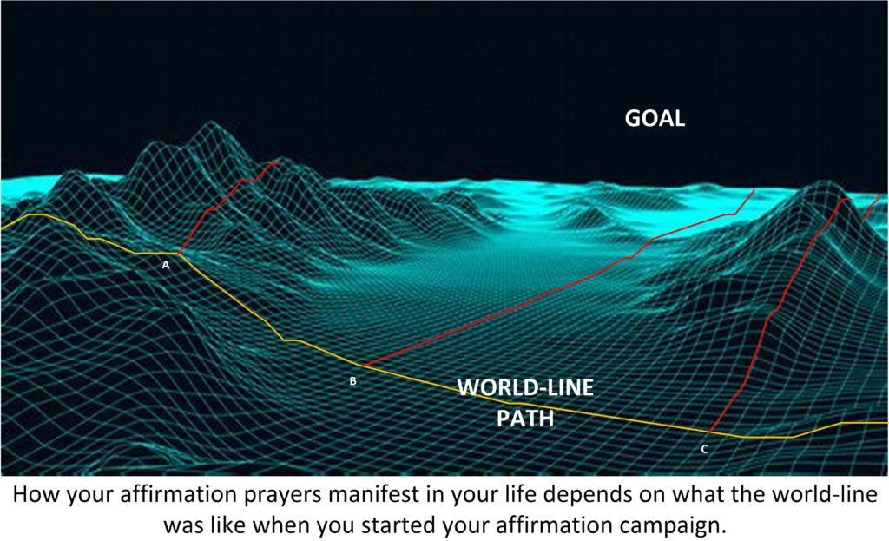
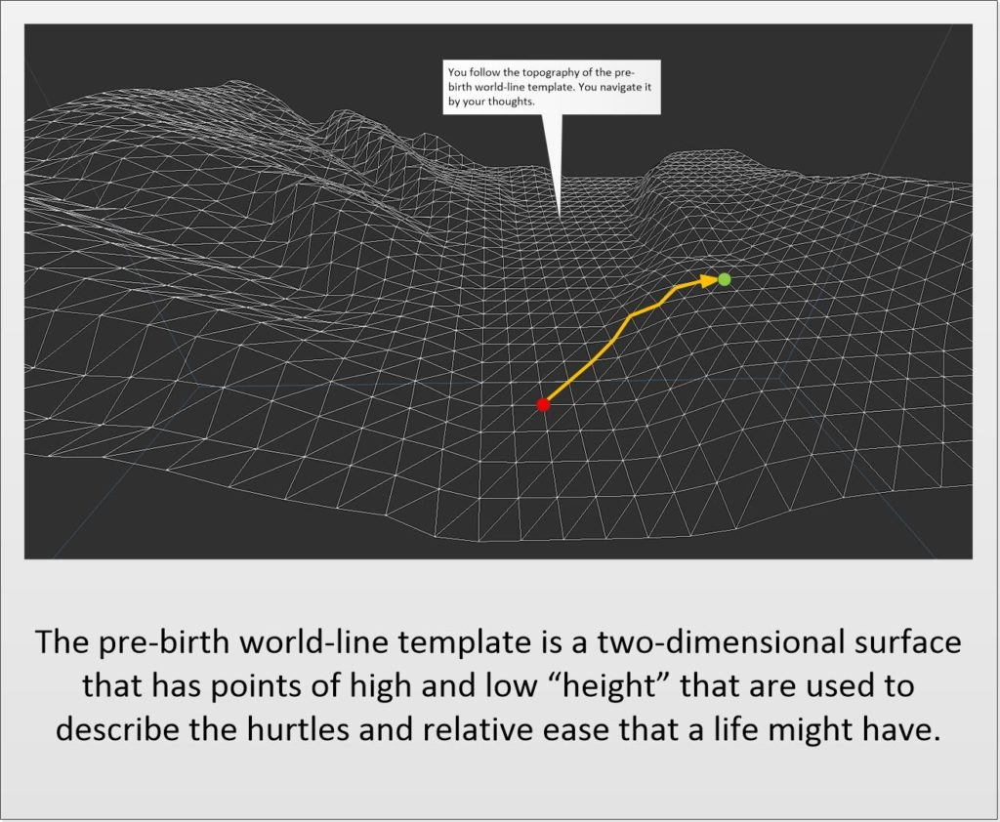
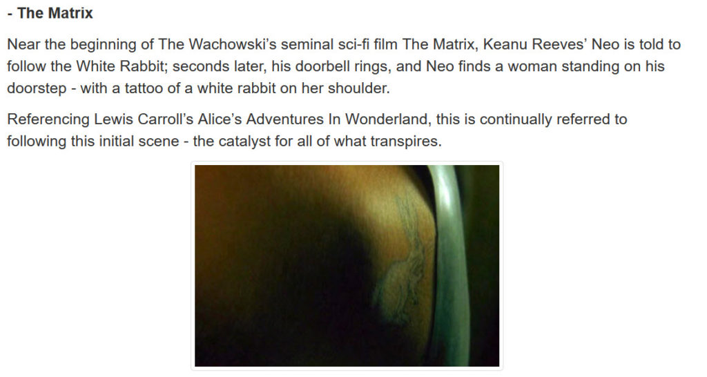
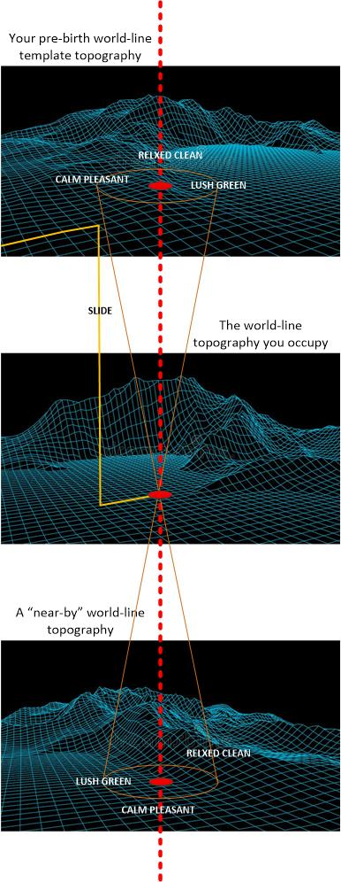

In this article we will look at an important part of prayer affirmation campaigns. And that is an element known as “synchronicity”. Now, “synchronicity” may or may not be part of the “sign posts” or “feedback loops” that your soul established for your consciousness to take note of. This is because synchronicity is often a direct answer or feedback to individual affirmations within a campaign.
A Personal Example
You know…
Yeah, you know that where I live now is sort of like a Chinese version of (the American television show) “Mayberry RFD”. It’s got that lower pace of life, a much more relaxed, laid back attitude, and a far calmer “feeling” to it. It’s not so hurried, upsetting, radical or drastic as what America (or any larger city) is today.
It’s actually a little bit like this as far as “feeling” goes…
Ah, but sure. China does not resemble the “Deep South” in America. It’s totally and completely different. It has modern and advanced transportation, brand new and impressive buildings, High technology, and parks everywhere.
No. China does not physically resemble The small town of Grady, or Mayberry.
But yet it does have the same “feeling“.
Yet, how, just how can I say that it resembles a scene from the movie “Doc Hollywood”?
Sometimes, heck – many times, the things that we wish for or want are not direct one-on-one comparisons. And this is a good example of that.
What I wanted, and asked for (And still maintain) in my personal affirmation campaigns;
- I have a calm and relaxed pace of life in a beautiful area that is family friendly, stress free, clean, and full of fresh air and lush greenery.
I know, that it’s not for everyone, but heck, I live a “retired” life and I want a slower pace of life. Don’t you know. I want and maintain, a life where I eat food without being in a rush, where I say hi to all the neighbors and they all know me, and where the air is fresh, the trees are lush, the flowers are fragrant, and the neighborhood is safe.
Look at what I specified (in the affirmation above)…
- Calm and relaxed pace of life.
- Beautiful Area.
- Family friendly environment.
- Stress free.
- Clean.
- Full of fresh air.
- Clean, neat and tidy.
- With lush greenery.
You see, that I KNEW when (certain specific affirmations) were manifesting when there were elements of synchronicity that would crop up. In this particular example, Chinese words describing Zhuhai would manifest “all over the place”. As in advertisements, on Tiktok videos, on WeChat message, and the like.
Look at the above key “bullet points”.
And yes… I would start reading and seeing the same Chinese wording all… over… the place…
- 平静和轻松的生活节奏。
- 美丽的地区。
- 家庭友好的环境。
- 无压力。
- 清洁。
- 充满新鲜空气。
- 干净、整洁、整洁。
- 郁郁葱葱的绿色植物。
And it wasn’t one statement here, and then seven months later another. No. It was all of them, over and over within a very short span of time. Just a few days.
Suddenly the same words that I described in my affirmations, manifested physically within my life.

Anyways…
Back to the point at hand.
What you want, but not what you specify…
it can be pretty confusing you know. That on one hand, if you specify things explicitly (within your prayer affirmations) that there will usually be some kind of unexpected or unforeseen system, condition, event or person that would rise up and surprise you.
While on the other hand, the best and most satisfying results were ones that were NOT explicitly specified, but rather “imaged” as a ultimate desire.
In the personal example above, I could have been very specific…
- I live in the rural Southern States of America. The town is small, and relaxed, and doesn’t have direct interstate highway access. It is rather back-wards and isolated.
And I probably would have eventually gotten exactly what I specified. I might have ended up in New Iberia, Louisiana or some other deep Southern town / small city.
And, is that bad?
Well…
Sometimes when you ask for really, very explicit things, you will automatically slide off your pre-birth world-line template. And where you end up might have all sorts of consequences that you might not be ready for.
Why not? Why didn’t I do that? Why did I allow my affirmation to be so “broad based” and “open ended”?
When you conduct a prayer / affirmation campaign it STARTS at the point in time (upon the world-line) where you are presently. It doesn’t back-track a few months or years early. It starts when you start the campaign.
Which means that the conditions of your life, at the time you start the campaign, are the initial starting conditions that the prayer / affirmations build upon.

So, for me, when I started my campaign I had already visited numerous locations all over the world. I had been to China. I had been to Japan. I had traveled all over the United States. So when I started my campaign, the best-fit solutions for my end goals resembled the closest opportunities based from my experiences. Which was China.
Perhaps, if I had not experienced China, and instead spent the majority of my life in Los Angles, New York City, or Chicago the results would have manifested differently…
Doc Hollywood Benjamin Stone is a young doctor driving to L.A., where he is interviewing for a high-paying job as a plastic surgeon in Beverly Hills. He gets off the highway to avoid a traffic jam, but gets lost and ends up crashing into a fence in the small town of Grady. He is sentenced to 32 hours of community service at the local hospital. All he wants is to serve the sentence, get his car fixed and get moving, but gradually the locals become attached to the new doctor, and he falls for the pretty ambulance driver, Lou. Will he leave? -Written by Sami Al-Taher <staher2000@yahoo.com>
What is “synchronicity”?
So what about this “synchronicity”? What is it, and why is it important, and why (for goodness sakes) am I devoting an entire article to it?
Well, for starters, it is considered to be nonsense by the “experts”, and fundamental to understand ourselves by “spiritualists”.
Synchronicity is a phenomenon in which people interpret two separate—and seemingly unrelated—experiences as being meaningfully intertwined, even though there is no evidence that one led to the other or that the two events are linked in any other causal way. Though many people perceive signs or spiritual meaning in synchronistic events, most scientists believe that such events are more likely coincidences that only seem meaningful due to aspects of human thinking such as confirmation bias. -Psychology Today
Some would say that coincidences are random, but if we look carefully into our lives, we realize it is not so. No matter what the “experts” say.
Some people believe that synchronicities can be guides when we do not know what to choose or what to change in our lives. It is like someone from above hears our silent prayers and talks to us through other people, images or events. As a matter of fact, Einstein described coincidences as being “God’s way of remaining unknown”.
Spiritual individuals may interpret coincidences as signs from God or the universe. However, there is no way to scientifically test these beliefs. While seeing coincidences as signs can provide a sense of purpose, following them too closely can lead to ignoring critical evidence. It’s best to weigh common sense, intuition, and verifiable facts when interpreting coincidences. -Psychology Today
Synchronicity connects the material world to the spiritual world. It does so through symbols. These symbols are not always understood but they do arise from the collective unconscious.
Remember; nothing is by chance. It is the direct result of our thoughts.
And for us, those who take an active and proactive role in shaping our future though prayer / affirmation campaigns, we can USE synchronicity as one (of many ways) to validate that we are “on the right track” and on the way towards our goals.
Examples of synchronicity in your life
In general, synchronicity is a very, very personal event. It is only something the YOU notice that the rest of the world seems oblivious to.
1) The same numbers keep showing up over and over in your life.
2) You have met someone out of the blue who talked about an event or said some sentences which in fact sounded like answers to that you have been asking yourself recently.
3) Perfect timing! Things happen for you just when you need them most.
4) Help and support appear in your life when you expect less from people you never met before.
In 1983, when I was dating my first wife she took a moment to pray. I didn't know what she was praying about. But right after she prayed, the DJ on the radio interrupted the song he was playing. He changed the song to one that was about "getting married and living happily ever after." He said on the air that he was so very sorry for interrupting the song and the music rotation schedule, but that he felt a strong urge to change the song to the one that he played. And yes. You guessed it. My future-wife had prayed for "a sign" that would give her direction to get married to me or not.
Of course,the “experts” believe that all this is just coincidence, or that we are reading too much into what we observe. But that is not true at all.
The list of synchronicities can be endless and subjective as synchronicity is a rather complex phenomenon. These are a few general examples that we all experience at a certain point in our lives.
The best way to recognize your synchronicities is to “think less and feel more”, listen to your intuition. By being in tune with your inner voice, you can understand the outer signs easier.
Intuition is usually validated by an external “magic” or unusual event.
Therefore, if you seek an answer and you randomly read a sentence in a newspaper or watch a video related to your current situation, you will feel a revelation. Then you should ask yourself if that is the answer you were waiting for.
How can you use synchronicities?
The great value in synchronicities is that they can help us track our progress and goals within an affirmation / prayer campaign.
They act as a “wake up call”, or “alarm” for us to TAKE NOTICE that we have arrived [1] at a certain point of time, [2] a certain place, or [3] a goal has been fulfilled.
What inspired this post…
It began with a comment…
First let me thank you big time for this. Its good to read more about the technical side of prayers. You already stated that you will have some more follow up posts and my guess is it involves synchronicities. And when you re going to do that one, and please don't feel in a rush, but Please include why they mean that someone performed a slide. And if I may say so how its possible that I have had a lot of them after about a week into my pause on 2 occasions already. And I specifically tried to avoid causing a slide. And my prayers in general have relative small improvements over my current life. And when it comes to my far out prayer, i still asked that it only materializes if its able without causing any strife or danger. And besides that probably false positive I told you about a couple months ago , nothing shows up about that one. Yet. Big thanks again. It feels good that you took the time and effort to write this. And I hope my fellow MM readers find value in it too.
So…
What do I mean when I say that “someone has performed a slide…”
Slides and Synchronicities.
Now a “slide” is an event that describes moving off your pre-birth world-line template onto a new world-line terrain.
It can roughly be described as…
- Playing golf. Where you hit a ball and it goes off the fairway, and goes into the woods.
- Driving on a road. Where you leave the highway, and take a “short cut” that ends up being a bumpy dirt road.
- Flying on a plane to Paris, France, and when it finally lands, you find yourself in Zambia, Africa.
- Going to eat a nice cheap dinner, and walking into an exclusive very-expensive high-end dining establishment.
If you map out your life-line, and you plot the highest probability paths that your life can take you, with the life and decisions you actually made, you would end up with a two dimensional topographical surface. This surface for all people is typically known as the pre-birth world-line template.

A “slide” happens when the world-line that you target, or that you end up going to is NOT on that topographic surface.
You “slide” off that map, and enter another map; a totally different map.
Now, the good news (or bad, depending on your point of view) is that you will automatically migrate back to your original world-line. It’s biologically encoded to the physical body that you inhabit. So, if you want to have an exceptional life, when your pre-birth world-line template would not allow you, you would need to keep on a steady and active affirmation prayer campaign(s) for the rest of your life.
A slide will take you onto “unknown” territory. It is a realm that your physical body is not pre-programmed to accept.
- A slide will take you where your affirmation prayers lead you.
- A slide can be an easier or harsher life. There is no way to determine which.
- A slide happens automatically, and the only way for you to control it is to add “navigation affirmations” within your prayer campaign.
And while you might have to pass through all sorts of things, events, encounters and adventures to get there (your targeted objective that lies off the pre-birth world-line template) there will come a point in time when you will have arrived at your destination.
Now, destinations can be obtained anywhere. Most commonly they occur upon the pre-birth world-line template.
But when you get off the template, even for slight detours or deviations, you will know because you will experience Synchronicities.
What are Synchronicities according to Metallicman?

Synchronicities are echoes of similar world-lines that lie off of your present world-line topography.
Not helpful?
I know.
The best way that I can describe this is visually.

In the picture above you see three different topographical world-line templates. The very first one is the pre-birth world-line template that you were born into. You can see the life-line that you have taken in the goldenrod color. You were following the normal life and then you had a slide.
The slide took you off your pre-birth world-line template.
And then placed you on a completely new “map” with completely different topography.
Now, you will notice that upon your pre-birth world-line template were some goals that you want (Well, I used my own personal goals from the personal narrative that I presented earlier.)
- Lush green
- Relaxed clean
- Calm pleasant
None of them were present simultaneously on your one individual world-line. This was your pre-birth world-line template. They were present, but not all at one place. Not at one place at one time.
But they are on the new world-line template topographical surface that you slid towards.
The slide took you to a new topographical “map”. And it took you directly to your objectives; a place, a world-line, where all the criteria that you prayed for were present simultaneously on one world-line.
Now, you will notice another world-line topographic surface that lies “nearby” your own. You have never visited it. But it too has the criteria and goals that you have established in your affirmation prayers. But they too are not simultaneously located on one particular world-line.
The key here, and the point here, is that synchronicities are the “echoes” of your targets manifesting when you have arrived at a given world-line. When you have “arrived”, you will start seeing synchronicities that only you will notice.
In the picture above, I denoted the area of where your goals would manifest as a wide dispersed group of world-lines. This is the brown oval in the top and the bottom world-line topographical maps.
And then in the middle map you see that the points are all present; the goals are all present in on set world-line. The brown lines converge to that point.
This converging of goals manifests as synchronicities.
Yes, Synchronicities are a sign that you have arrived and your goals have been attained.
Synchronicities are meaningful coincidences.
Here's a story that I found on the internet. All credit to the author, and edited to fit this venue. It's a very illustrative story...
I used to be a reporter for the Cincinnati Enquirer, back in my 20s, and for roughly half of my decade-long tenure there I kept hearing a call to quit and become a freelance writer, a decision I largely ignored for years because it was Scary Stuff.
However, after years of trying to ignore this call, the signs pointing toward it took on a whole new tack. This is how it began:
I was driving home from work one day, listening to a song on the radio called “Desperado,” by the Eagles, and as I pulled up to the curb in front of my house, the last line I heard before I turned off the car was “Don’t you draw the Queen of Diamonds, she’ll beat you if she’s able; the Queen of Hearts is always your best bet.” I turned off the ignition, opened the door, stepped my foot onto the curb, and there at my left foot was a playing card—the Queen of Hearts.
I just sat there utterly dumbfounded, and wondering, of course, what it meant?
When I mentioned the incident to a friend that evening, she said, with an extravagant quality of assuredness, that when you’re on the right path, the universe winks and nods at you from time to time, to let you know. She also said that once you start noticing these little cosmic cairns, once you understand that you’re on a path at all, you’ll begin to see them everywhere. It’s what happened, she reminded me, when I bought my Toyota and suddenly started seeing Toyotas everywhere.
I didn’t know I was even on a path, I told her, much less whether it was the right one. I simply found myself unable to make heads or tails of the episode, and ended up filing it under “Unexplained Phenomena,” along with esp, deja vu, spoon-bending, water-witching, spontaneous remission, and certain incomprehensible acts of human forgiveness.
But even more remarkable than finding that Queen card when I did, was that over the next two years, as I searched for a sense of clarity (and courage) about this call, I found five more Queen playing cards, in incredibly improbable locations all around the country: a sidewalk in Cincinnati, a conference room in Santa Fe, a sand dune in Cannon Beach Oregon, a mountain wilderness in Colorado six miles from the nearest trailhead. The whole thing made the Twilight Zone seem like Mister Rogers Neighborhood.
And every time I found another Queen card, the sheer unbelievability of it took another giant step forward, and eventually, it went so far beyond the laws of probability that I only barely hesitate to say that it’s impossible there was nothing more going on here than a statistical aberration. This was orchestrated by something with wits. Which shot my rational view of the universe pretty much to hell.
I come from a family of scientists, detectives, journalists, non-fiction writers, and New Yorkers—and you don’t get a more cynical bunch than this—and this stuff just doesn’t happen in our universe. And yet, though the phenomenon became more inscrutable with each find, in a way it also began making more and more sense. A pattern—more, a passageway—seemed to emerge.
I came to understand that this rather profound administering of chance was directing me toward something both my writing and my life needed at that time: more heart, less head. More intuition, less intellect. More of the inner life, the emotional life, the life of the senses. More listening. More of what Carl Jung referred to as the anima, the force of the feminine in a man’s life. And the Queen, of course, is the archetype of powerful feminine energy, which I felt myself being compelled toward by the kind of meaningful coincidence Jung called synchronicity.
Of course, he offers his ideas and thoughts to what it is all about…
Synchronicities are events connected to one another not by strict cause-and-effect, but by what in classical times were known as sympathies, by the belief that an acausal relationship exists between events on the inside and the outside of ourselves, crosstalk between mind and matter—which is governed by a certain species of attraction.
Jung believed that synchronicities mirror deep psychological processes, carry messages the way dreams do, and take on meaning and provide guidance to the degree they correspond to emotional states and inner experiences.
For example, you’re trying to decide whether to say yes or no to a particular opportunity and while driving on the freeway someone suddenly cuts in front of you and you notice the bumper sticker: Just Do It!
Or you’re struggling to focus your energies, not spread yourself so thin and scatter your interests and attentions among too many projects, and while taking photographs one afternoon, you drop your wide-angle lens and shatter it.
You can derive meaning from “just a coincidence” when an external event matches up with an event on the inside. It doesn’t always. You might be sitting in a waiting room, for instance, reading a magazine article about George Gershwin, when the receptionist sticks her head out the door and calls for the next patient, a Mr. Gershwin, and as outlandish as this may seem to you, if it finds no hook on the inside, it’s not a synchronicity, only an amazing coincidence. If it means something to you, however, then it’s amazing and potentially instructive.
A synchronicity is a coincidence that has an analog in the psyche, and depending on how you understand it, it can inform you, primarily through intuition and emotion, how near or far you are from what Carlos Castaneda calls “the path with heart.” Among shamanic cultures, says anthropologist Michael Harner in The Way of the Shaman, synchronicities are considered “a kind of homing beacon analogous to a radio directional signal indicating that the right procedures and methods are being employed.”
Like anything, you look at things through the lens of your very own personal experience. You might be a scientist, and you look at it from that view point. You might be a sociologist, and you look at it through that view point. You might be religious and so you look at it through that point of view.
It doesn’t mean that there is a right, or a wrong way of looking at things. Only a personal understanding of the events that you can accept.
Synchronicities are minor miracles, little mysteries that point to a bigger one, perhaps a central one, of which we’re all a part. In contemplating synchronicities, don’t just marvel at the laws of probability, but wonder at their meaning.
“The primary reality of synchronicities is emotional, not intellectual,” says Mark Holland, co-author of Synchronicity. “The reason they’re there is to make us feel something, and the feeling that our lives are rich and worth our reflection comes in part from our sense of the depth and mystery of life.”
In fact, maybe the most important thing synchronicities offer is astonishment. How often, after all, in the course of a day or a week or a month, do you find yourself thunderstruck, flabbergasted at life, amazed by its finesse? Synchronicities are like the glimpse of a wild animal seldom seen, the discovery of an arrowhead or a geode, the return of your purse by some good Samaritan. Far removed from the mundaneness that seems to characterize such a vast portion of daily life, they help reconnect you to your sense of awe, and given the tyranny of the commonplace, what a service!
No one has been able to fully explain synchronicity, so perhaps you should simply accept it as a wild card and an ordering principle, the height of absurdity and the depth of profundity, and a crack in the door through which you can catch sight of the universe and its mysterious ways.
There are no clear answers.
However, if you look at synchronicity as the obtainment of a goal that you have presented within your affirmation /prayer campaign, then you can accept the fact that you are “one the right track”, that things are falling in place, and that your affirmations are working.
An important point
Synchronicity does not automatically happen when you achieve a goal. You cannot plan for it unless you specifically add it to your affirmation / prayers. You cannot keep rowing a boat waiting for the fish to leap out of the water and tell you that this is the best fishing spot. It doesn’t work that way.
Synchronicity seems to be associated with “goal attainment” ONLY when otherwise you might miss, ignore, or overlook the situation that you find yourself in. It’s almost like a sign on the road that says “go no further, you have reached the end of the road”. It’s a way or a system to tells us that we reached our goals, and now know where we are and what to do next.
Pay attention to it.